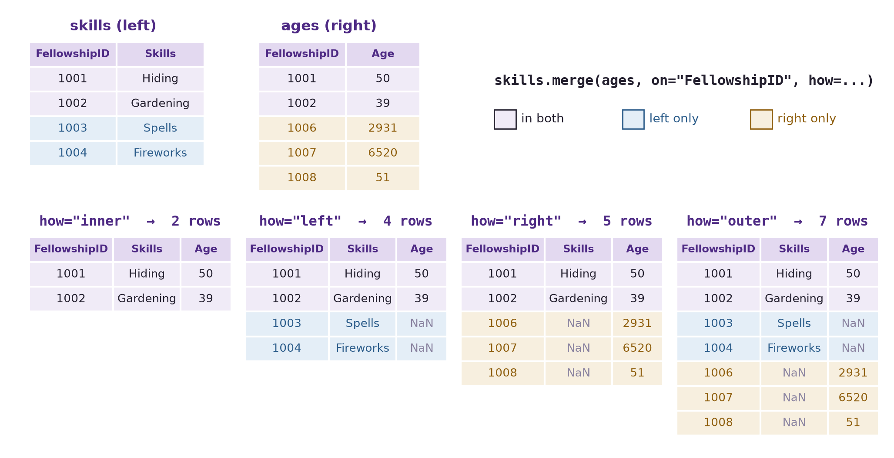

import numpy as np
import pandas as pd
import matplotlib.pyplot as plt
import seaborn as sns14 Combining Datasets
Data Reshaping ended with a condition: two tables can be joined row by row only once each row means the same thing in both. This chapter does the joining. Real analyses rarely start from a single table. The information you need is split across files — one per region or per year, one holding measurements and another holding descriptions — and the first job is often to put it back together.
There are two basic ways to combine tables. When they hold the same kind of rows, you stack them. When they hold different information about the same things, you match their rows on a shared key. Matching is where the surprises live: rows that find no partner, keys that appear twice, names spelled differently in two sources. So, as in the last two chapters, the habit to build is checking the result before you trust it.
By the end of this chapter you should be able to:
- Stack tables that share their columns with
pd.concat(), record which piece each row came from, and check the row count. - Combine tables that share a key with
merge(), on one or several key columns, including keys with different names (left_on=,right_on=). - Choose
how=("inner","left","right","outer"), predict which rows survive, and useindicator=Trueto see where each row came from. - Check a merge before trusting it: compare row counts, enforce key uniqueness with
validate=, and decide what the missing values from unmatched keys mean.
Complete the practice activity after the worked examples.
14.1 Set Up Your Chapter Files
Download the Combining Datasets practice kit. Extract stat303-combining-datasets inside the chapters folder of your stat303-1 course folder, open stat303-1 in VS Code, and select the course environment. The terminal opens in stat303-1, so move it into the kit with cd chapters and then cd stat303-combining-datasets before you render the activity.
stat303-1/
├── .venv/
├── assignments/
└── chapters/
└── stat303-combining-datasets/
├── combining_datasets_examples.ipynb
├── activity14.ipynb
├── README.md
└── data/
├── gdp_lifeExpec_Africa.csv
├── gdp_lifeExpec_Americas.csv
├── gdp_lifeExpec_Asia.csv
├── gdp_lifeExpec_Europe.csv
├── gdp_lifeExpec_Oceania.csv
└── country-capital-lat-long-population.csvRun combining_datasets_examples.ipynb for the lesson and complete activity14.ipynb for your own activity report, with stat303-combining-datasets as the notebook working folder. Every file is read with a relative path such as "data/gdp_lifeExpec_Asia.csv", so the notebooks find their data only when that folder is the working folder.
Environment check: This chapter uses NumPy, pandas, matplotlib, and seaborn, all of which are already in the course environment. If an import fails, check the selected notebook kernel first: it must be the course environment, stat303-1/.venv, as in Project Environments, Packages, and File Paths.
14.2 Why combine datasets
Why combine?
- Information is distributed. Customer details live in one table and purchases in another; product descriptions are separate from sales; a survey’s answers are split across several files.
- Data comes from several sources. Internal records meet external data — a company’s sales with public economic indicators, or a course’s grades with its attendance log.
- Data is split for storage. One file per month, per region, or per year is common, and an analysis across all of them needs them in one table.
- An analysis needs more columns. Adding a population, a region, or a category from a second table makes new comparisons possible.
Two operations cover nearly every case:
| Operation | Tool | The tables share | Result |
|---|---|---|---|
| Stack | pd.concat() |
The same columns, different rows | More rows |
| Match | df.merge() |
A key column, different information | More columns, rows paired by key |
14.3 Stack rows: pd.concat()
The Gapminder data from the last two chapters arrives here in pieces: one file per continent, each with the same five columns. Combining them is stacking, and pd.concat(), which you met adding a row in Data Reshaping, does it for a whole list of tables.
None of the files has a continent column — the continent is in the file name. Adding it as each file is read keeps that information once the pieces are stacked. A for loop reads each file, adds the column, and collects the pieces in a list:
pieces = []
for continent in ["Africa", "Americas", "Asia", "Europe", "Oceania"]:
piece = pd.read_csv(f"data/gdp_lifeExpec_{continent}.csv")
piece["continent"] = continent
print(continent, piece.shape)
pieces.append(piece)
gapminder = pd.concat(pieces, ignore_index=True)
print("stacked:", gapminder.shape)
gapminder.head()Africa (624, 6)
Americas (300, 6)
Asia (396, 6)
Europe (360, 6)
Oceania (24, 6)
stacked: (1704, 6)| country | year | lifeExp | pop | gdpPercap | continent | |
|---|---|---|---|---|---|---|
| 0 | Algeria | 1952 | 43.077 | 9279525 | 2449.008185 | Africa |
| 1 | Algeria | 1957 | 45.685 | 10270856 | 3013.976023 | Africa |
| 2 | Algeria | 1962 | 48.303 | 11000948 | 2550.816880 | Africa |
| 3 | Algeria | 1967 | 51.407 | 12760499 | 3246.991771 | Africa |
| 4 | Algeria | 1972 | 54.518 | 14760787 | 4182.663766 | Africa |
624 + 300 + 396 + 360 + 24 = 1,704 rows: the stacked table has exactly the rows of its pieces, which is the check to make after any stack. ignore_index=True numbers the stacked rows 0 to 1,703; without it, each piece keeps its own numbering and row labels repeat.
concat() lines up columns by name. A column that some pieces lack is filled with NaN in the rows from those pieces. Suppose the Africa file had spelled one column differently:
renamed = pieces[0].rename(columns={"lifeExp": "life_expectancy"}) # the Africa piece
mixed = pd.concat([renamed] + pieces[1:], ignore_index=True)
print(mixed.columns.tolist())
mixed[["lifeExp", "life_expectancy"]].isna().sum()['country', 'year', 'life_expectancy', 'pop', 'gdpPercap', 'continent', 'lifeExp']lifeExp 624
life_expectancy 1080
dtype: int64No error, the right number of rows, and life expectancy split across two half-empty columns: lifeExp is missing for Africa’s 624 rows and life_expectancy for the other 1,080. Any analysis of lifeExp would silently leave out Africa. After stacking files you did not make yourself, check columns and count missing values per column.
The correctly stacked table goes straight into the tools of the last chapters:
fig, ax = plt.subplots(figsize=(8, 4.5), layout="constrained")
sns.lineplot(data=gapminder, x="year", y="lifeExp", hue="continent",
errorbar=None, marker="o", ax=ax)
ax.set(xlabel="Year", ylabel="Mean life expectancy (years)",
title="Five files, one table, one plot")
plt.show()
lineplot averages the countries of each continent in each year, as groupby() did in Data Grouping and Aggregation; errorbar=None leaves out the confidence bands. Without the continent column added during the loop, this plot would be impossible.
14.4 Match rows on a key: merge()
Stacking needs tables with the same columns. Matching needs something different: a key, a column whose values identify the same thing in both tables. Two small tables about members of the Fellowship from The Lord of the Rings show how it works. One lists skills, the other ages, and both identify members by FellowshipID:
skills = pd.DataFrame({
"FellowshipID": [1001, 1002, 1003, 1004],
"FirstName": ["Frodo", "Samwise", "Gandalf", "Pippin"],
"Skills": ["Hiding", "Gardening", "Spells", "Fireworks"],
})
ages = pd.DataFrame({
"FellowshipID": [1001, 1002, 1006, 1007, 1008],
"FirstName": ["Frodo", "Samwise", "Legolas", "Elrond", "Boromir"],
"Age": [50, 39, 2931, 6520, 51],
})
print(skills, "\n")
print(ages) FellowshipID FirstName Skills
0 1001 Frodo Hiding
1 1002 Samwise Gardening
2 1003 Gandalf Spells
3 1004 Pippin Fireworks
FellowshipID FirstName Age
0 1001 Frodo 50
1 1002 Samwise 39
2 1006 Legolas 2931
3 1007 Elrond 6520
4 1008 Boromir 51Frodo and Samwise appear in both tables; Gandalf and Pippin only in skills; Legolas, Elrond, and Boromir only in ages. merge() pairs rows whose key values are equal:
skills.merge(ages, on="FellowshipID")| FellowshipID | FirstName_x | Skills | FirstName_y | Age | |
|---|---|---|---|---|---|
| 0 | 1001 | Frodo | Hiding | Frodo | 50 |
| 1 | 1002 | Samwise | Gardening | Samwise | 39 |
Two rows: by default merge() keeps only keys found in both tables. Notice FirstName_x and FirstName_y. Both tables have a FirstName column that is not part of the key, so pandas keeps both and adds suffixes: _x from the left table, _y from the right. Here the two columns agree, because a name belongs to its ID.
14.4.1 Several key columns
When two tables share more than one identifying column, list them all in on=. Rows then pair only when every key matches, and the shared columns appear once:
skills.merge(ages, on=["FellowshipID", "FirstName"])| FellowshipID | FirstName | Skills | Age | |
|---|---|---|---|---|
| 0 | 1001 | Frodo | Hiding | 50 |
| 1 | 1002 | Samwise | Gardening | 39 |
Several key columns are common: a sale is identified by store and date, a grade by student and course, a Gapminder row by country and year.
14.4.2 Keys with different names
Two sources rarely name their key the same way: FellowshipID in one file, ID in another. left_on= and right_on= name the key in each table:
ages_renamed = ages.rename(columns={"FellowshipID": "ID"})
skills.merge(ages_renamed, left_on="FellowshipID", right_on="ID")| FellowshipID | FirstName_x | Skills | ID | FirstName_y | Age | |
|---|---|---|---|---|---|---|
| 0 | 1001 | Frodo | Hiding | 1001 | Frodo | 50 |
| 1 | 1002 | Samwise | Gardening | 1002 | Samwise | 39 |
Both key columns survive, holding identical values; drop one afterwards with .drop(columns="ID").
14.4.3 Which rows survive: how=
The rows that find no partner are where most mistakes happen. how= decides what happens to them:

how= |
Keeps | NaN appears in |
Rows here |
|---|---|---|---|
"inner" (default) |
Keys in both tables | Nowhere | 2 |
"left" |
Every left key | Right-hand columns of unmatched rows | 4 |
"right" |
Every right key | Left-hand columns of unmatched rows | 5 |
"outer" |
Every key in either table | Both sides | 7 |
The counts are worth confirming in code, and indicator=True adds a _merge column that says where each row came from:
fellowship = skills.merge(ages, on=["FellowshipID", "FirstName"], how="outer", indicator=True)
fellowship| FellowshipID | FirstName | Skills | Age | _merge | |
|---|---|---|---|---|---|
| 0 | 1001 | Frodo | Hiding | 50.0 | both |
| 1 | 1002 | Samwise | Gardening | 39.0 | both |
| 2 | 1003 | Gandalf | Spells | NaN | left_only |
| 3 | 1004 | Pippin | Fireworks | NaN | left_only |
| 4 | 1006 | Legolas | NaN | 2931.0 | right_only |
| 5 | 1007 | Elrond | NaN | 6520.0 | right_only |
| 6 | 1008 | Boromir | NaN | 51.0 | right_only |
fellowship["_merge"].value_counts()_merge
right_only 3
left_only 2
both 2
Name: count, dtype: int64both, left_only, and right_only are the three colours of the diagram. Counting the _merge column is the quickest way to see how well two tables matched: a merge you expected to pair almost everything, but that shows many left_only rows, is usually a sign that the keys are written differently in the two tables.
Which how= to use.
how= |
Use when | Examples |
|---|---|---|
"inner" |
The analysis needs both pieces of information for every row | Relating vaccination rates to infection rates: only countries with both can contribute. An A/B test: only users with both a group assignment and an outcome count. |
"left" |
The left table is your primary data and every row must stay | All customers with their purchases: a customer with no purchases spent $0. All employees with their reviews: an employee not yet reviewed is “pending”, not missing. |
"outer" |
Nothing may be lost from either table | Mid- and end-of-semester surveys: keep every student who answered either one. Auditing expected against actual records: find what is missing on each side. |
"right" |
The right table is primary | The same as a left join with the tables swapped; writing it as a left join, primary table first, usually reads more clearly. |
14.5 Check a merge
A merge can return a table of the right shape that is quietly wrong. Three checks catch most problems: the row count, the uniqueness of the keys, and the missing values that unmatched keys leave behind.
14.5.1 The row count, and keys that repeat
Suppose life expectancy and GDP arrived in two separate tables, both keyed by country and year:
life = gapminder[["country", "year", "lifeExp"]]
money = gapminder[["country", "year", "gdpPercap"]]
both_keys = life.merge(money, on=["country", "year"])
print(life.shape, money.shape, "->", both_keys.shape)(1704, 3) (1704, 3) -> (1704, 4)1,704 rows in, 1,704 rows out: every country-year found exactly one partner. Now the same merge with an incomplete key, country alone:
country_only = life.merge(money, on="country")
print(country_only.shape)
country_only.head(3)(20448, 5)| country | year_x | lifeExp | year_y | gdpPercap | |
|---|---|---|---|---|---|
| 0 | Algeria | 1952 | 43.077 | 1952 | 2449.008185 |
| 1 | Algeria | 1952 | 43.077 | 1957 | 3013.976023 |
| 2 | Algeria | 1952 | 43.077 | 1962 | 2550.816880 |
20,448 rows: twelve times too many, and no error. Each country has 12 rows in each table, so every row in life pairs with all 12 rows of the same country in money, and 12 × 12 = 144 rows per country × 142 countries = 20,448. The year_x and year_y columns are the giveaway: a 1952 life expectancy sits beside a 2007 GDP. A key must identify one row; country alone does not.
validate= tells merge() what you expect and raises an error when the keys disagree. "one_to_one" means each key appears at most once in each table; "many_to_one" means the right table’s keys are unique, as for a lookup table. A try/except block shows the error and lets the notebook keep running:
try:
life.merge(money, on="country", validate="one_to_one")
except pd.errors.MergeError as error:
print("MergeError:", str(error).splitlines()[0])MergeError: Merge keys are not unique in either left or right dataset; not a one-to-one merge.The same check passes for the correct key, on=["country", "year"]. Add validate= whenever you know how the tables should relate; it turns a silent row explosion into an error you cannot miss. Before merging, df.duplicated(subset=key).sum(), from Data Cleaning, counts repeated keys in each table.
14.5.2 Many rows to one: a lookup table
The most common merge in practice attaches a small lookup table to many rows: a region for each state, a price for each product code, a group summary for each member. Each row of the large table matches exactly one row of the lookup table, while each lookup row matches many — the "many_to_one" relationship.
A summary from Data Grouping and Aggregation makes a lookup table: mean life expectancy for each continent and year, 60 rows. rename() gives its value column a distinct name before the merge:
continent_mean = (gapminder.groupby(["continent", "year"])["lifeExp"].mean()
.reset_index()
.rename(columns={"lifeExp": "continent_lifeExp"}))
with_mean = gapminder.merge(continent_mean, on=["continent", "year"],
how="left", validate="many_to_one")
print(continent_mean.shape, "->", with_mean.shape)(60, 3) -> (1704, 7)validate="many_to_one" passes because each continent-year appears once in the lookup table, and the row count is still 1,704: every country row gained one value and none was duplicated. That is the check for any lookup merge — the row count must not change.
Each country can now be compared with its continent in the same year:
with_mean["gap"] = with_mean["lifeExp"] - with_mean["continent_lifeExp"]
(with_mean.sort_values("gap")
[["country", "continent", "year", "lifeExp", "continent_lifeExp", "gap"]]
.head(3).round(1))| country | continent | year | lifeExp | continent_lifeExp | gap | |
|---|---|---|---|---|---|---|
| 464 | Rwanda | Africa | 1992 | 23.6 | 53.6 | -30.0 |
| 965 | Cambodia | Asia | 1977 | 31.2 | 59.6 | -28.4 |
| 934 | Afghanistan | Asia | 2002 | 42.1 | 69.2 | -27.1 |
The largest gaps below a continent’s mean are Rwanda in 1992, 30 years below Africa’s mean in the years of its civil war and genocide; Cambodia in 1977, under the Khmer Rouge; and Afghanistan in 2002. The continent_lifeExp column is exactly what groupby(["continent", "year"])["lifeExp"].transform("mean") gave in Data Grouping and Aggregation. transform() is the shortcut when the summary comes from the same table; merging a summary back is the general pattern, and it works when the lookup table comes from somewhere else.
14.5.3 Missing values from unmatched keys
A left or outer merge fills the columns of unmatched rows with NaN. Unlike the gaps in Data Cleaning, these mean something specific: this key was not found in the other table. The right handling depends on what absence means.
left_join = skills.merge(ages, on=["FellowshipID", "FirstName"], how="left")
left_join| FellowshipID | FirstName | Skills | Age | |
|---|---|---|---|---|
| 0 | 1001 | Frodo | Hiding | 50.0 |
| 1 | 1002 | Samwise | Gardening | 39.0 |
| 2 | 1003 | Gandalf | Spells | NaN |
| 3 | 1004 | Pippin | Fireworks | NaN |
Gandalf’s and Pippin’s ages are NaN because the ages table has no row for them, not because their age is zero. Three choices, from Data Cleaning:
- Keep the
NaNwhen absence is informative and should be reported, as here: the ages table is incomplete. - Fill when absence has a known meaning: a customer with no purchase rows spent $0, so
fillna(0)is correct for spend, though it would be wrong for age. - Drop with
dropna(subset=[...])when an analysis needs both values — which is the same as having used an inner join.
Whichever you choose, count how many rows were unmatched before deciding.
Note
join() and concat(axis=1)
You will also meet df.join(other), which matches rows on the index rather than on a column, and pd.concat([a, b], axis=1), which places tables side by side by index. Both do work merge() can do once the key is an ordinary column, which is how this book writes it: merge() names the key, so the match is visible in the code.
14.6 Summary Cheat Sheet
Stacking.
| Goal | Code |
|---|---|
| Stack tables with the same columns | pd.concat([a, b, c], ignore_index=True) |
| Record each piece’s source | piece["source"] = name before stacking |
| Check the result | rows equal the sum of the pieces; inspect columns |
Matching.
| Goal | Code |
|---|---|
| Match on one key | left.merge(right, on="key") |
| Match on several keys | left.merge(right, on=["k1", "k2"]) |
| Keys with different names | left.merge(right, left_on="id", right_on="ID") |
| Keep unmatched rows | how="left", "right", or "outer" (default "inner") |
| See where each row came from | indicator=True, then df["_merge"].value_counts() |
| Enforce how keys relate | validate="one_to_one" or "many_to_one" |
| Count repeated keys first | df.duplicated(subset=["key"]).sum() |
| Attach a lookup table | big.merge(lookup, on="key", how="left", validate="many_to_one"); rows unchanged |
The rule to remember: after every merge, compare the row count with what you expected and count where the rows came from.
14.7 Practice Activity: Stack, Match, and Check
Goal: Combine real files by stacking and by matching, and use the checks to find what did not combine cleanly.
File: activity14.ipynb from the practice kit.
Submit: activity14.html through the final upload question in the Combining Datasets Canvas quiz.
This section contains the complete activity instructions. The starter loads the data and supplies spaces to record your work. Open activity14.ipynb from the folder prepared in Set Up Your Chapter Files, using the same project environment. The worked examples above are preparation, not additional submission requirements.
The starter reads the five continent files into a dictionary, pieces, keyed by continent name, and loads capitals, a table of countries with their capital cities.
A. Stack Five Files
- Replace
Your Namein the opening Raw cell’sauthorfield. Run the setup cell; it must report five continent tables andcapitalswith shape(234, 6). - Add a
continentcolumn to each piece and stack them withpd.concat(..., ignore_index=True)into one table,gapminder. - Show that the stacked row count equals the sum of the pieces, and that
gapminderhas no missing values.
B. Match Countries to Capitals
- Make
gapminder_2007, the rows for 2007, and merge it withcapitalsusinghow="left",left_on="country",right_on="Country", andindicator=True. - Report how many countries matched and how many did not, and list the unmatched countries.
- Choose two unmatched countries, find how each is written in
capitals, and explain why the merge missed them.
C. Inner Against Outer
- Repeat the merge with
how="inner"and withhow="outer", and report the row count of each. - Explain each count in terms of the rows in
gapminder_2007, the rows incapitals, and the number that matched.
D. Check the Keys
- Count the repeated values in
capitals["Country"]withduplicated(), and show the repeated rows. - Show that the Part B merge raises a
MergeErrorwithvalidate="many_to_one"(catch it withtry/except), then remove the repeat withdrop_duplicates(subset="Country")and show that the validated merge succeeds.
Render and Submit
Restart the kernel, run all cells in order, resolve unexpected errors, and save. Include your outputs and explanations for A–D, and a short Markdown completion note. From stat303-combining-datasets in the terminal, run:
quarto render activity14.ipynb --to htmlFollow the Quarto refresher: inspect the HTML and a copy opened outside the project folder, and confirm that every output appears and your name is on the report. Upload only activity14.html to the Combining Datasets Canvas quiz; keep your notebook locally.
HTML grading (16 points): the stacked table with its row and missing-value checks (4); the left merge, the matched and unmatched counts, and the two explained mismatches (4); inner and outer row counts with their explanation (4); the repeated key, the validated merge failing and then succeeding (3); name, readable report, and completion note (1).
14.8 Extended Practice
These longer exercises are additional practice, not requirements for the Canvas quiz. Work in a separate notebook beside your activity and load the data the way the chapter does. Include your code, outputs, and explanations.
14.8.1 Repair the Names
Build a small table that maps each unmatched Gapminder name to its spelling in capitals (for example, "United States" to "United States of America"), use it to add a corrected key column to gapminder_2007, and repeat the left merge. How many countries still fail to match, and why?
14.8.2 Capitals and Life Expectancy
After the repaired merge, plot life expectancy in 2007 against the latitude of each country’s capital, coloured by continent. Is there a pattern? What would you check before claiming one?
14.8.3 Stack, Then Summarize
Stack the five continent files without adding a continent column, then try to compute mean life expectancy by continent. What information was lost, and how else could you recover it from the files?
14.8.4 Merge Two Summaries
Compute mean life expectancy by continent and year in one table and total population by continent and year in another, using groupby(). Merge them on both keys with validate="one_to_one", and plot one against the other.
14.9 Before You Move On
The habit to carry forward is checking every combination. A stack should have exactly the rows of its pieces. A merge should have the rows you predicted from its keys and its how=, and indicator=True and validate= turn the ways it can go wrong — unmatched keys, keys that repeat — into numbers and errors you can see. None of these mistakes raises an error on its own; a merged table looks complete whether or not it is right.
The other habit is asking what an absence means. A NaN from an unmatched key says the other table had no row, which is different from a value of zero and different from a measurement that was never taken.
For any combination you make, you should be able to answer five questions:
- Are you stacking tables with the same columns, or matching tables on a key?
- What is the key, and does it identify exactly one row in each table?
- Which
how=did you choose, and how many rows did you expect? - How many rows matched, and why did the others not?
- What do the missing values from unmatched keys mean, and what did you do with them?
This chapter completes the path the book has followed: reading data, cleaning it, preparing it, summarizing it by group, reshaping it, and now combining it. The assignments in the appendices bring these steps together on larger datasets.
References: pandas: merge, join, concatenate and compare, pd.concat, DataFrame.merge, DataFrame.join, and pandas.errors.MergeError.